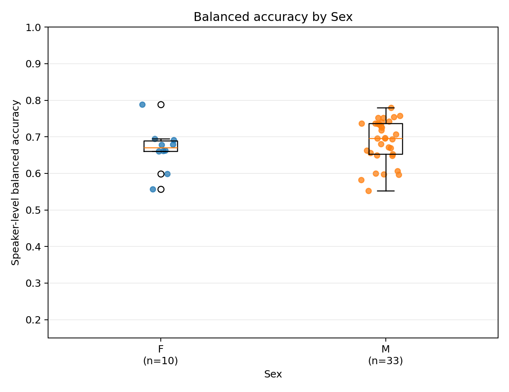
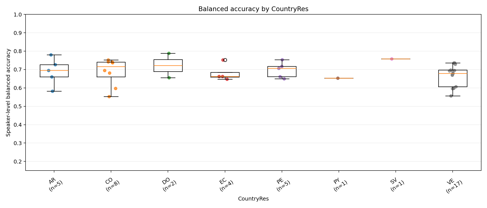
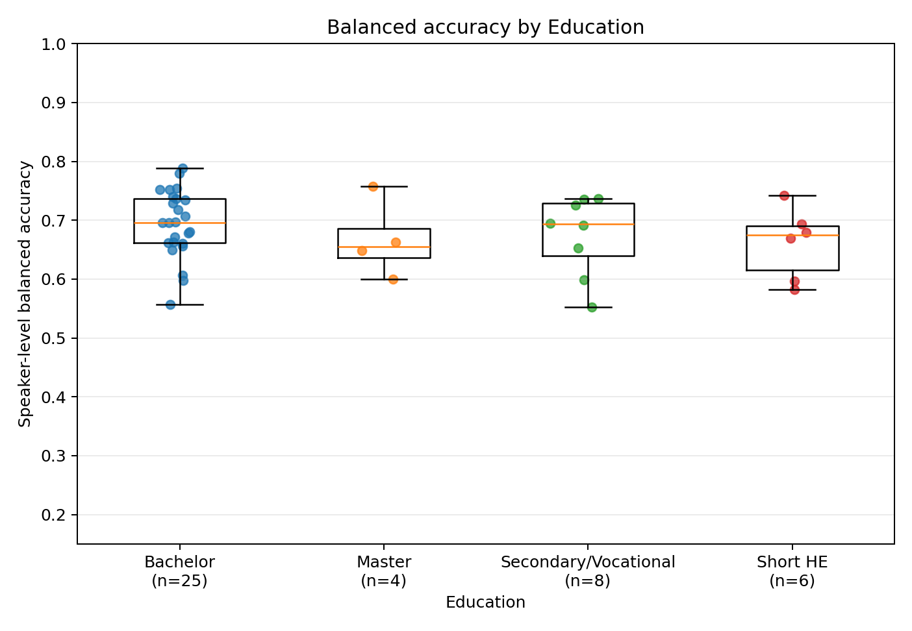
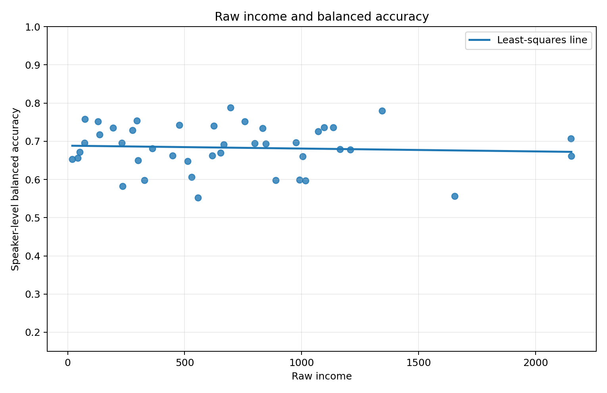

Benjamini–Hochberg false-discovery-rate correction was applied jointly to the five primary tests. The results concern classifier generalization, not pronunciation quality and not causation.
/home/pires/projects/speech-research/results/vowel_classification_raw_formants_only/per_speaker_results.csv
/home/pires/projects/speech-research/data/raw/social_metadata.csv
The Welch t-test compares mean balanced accuracy between the two sex groups. Welch ANOVA tests whether at least one mean differs across country-of-residence or education groups. Pearson measures linear association with raw income, whereas Spearman measures monotonic rank association.
| test | variable | n | groups | statistic | df1 | df2 | effect_name | effect | ci_low | ci_high | p_value | status | q_value |
|---|---|---|---|---|---|---|---|---|---|---|---|---|---|
| Welch t-test | Sex | 43 | 2.0000 | -0.9650 | 14.5684 | mean(F) - mean(M) | -0.0211 | -0.0678 | 0.0256 | 0.3503 | OK | 0.8997 | |
| Welch ANOVA | CountryRes | 41 | 6.0000 | 0.2969 | 5.0000 | 6.8352 | range of group means | 0.0532 | 0.8997 | OK | 0.8997 | ||
| Welch ANOVA | Education | 43 | 4.0000 | 0.6343 | 3.0000 | 9.1938 | range of group means | 0.0338 | 0.6110 | OK | 0.8997 | ||
| Pearson correlation | Income_raw | 43 | -0.0655 | r | -0.0655 | 0.6766 | OK | 0.8997 | |||||
| Spearman correlation | Income_raw | 43 | -0.0275 | rho | -0.0275 | 0.8611 | OK | 0.8997 |
| variable | Sex | n | mean | sd | median | minimum | maximum | CountryRes | Education |
|---|---|---|---|---|---|---|---|---|---|
| Sex | F | 10 | 0.6671 | 0.0609 | 0.6704 | 0.5565 | 0.7881 | <NA> | <NA> |
| Sex | M | 33 | 0.6882 | 0.0593 | 0.6958 | 0.5526 | 0.7799 | <NA> | <NA> |
| CountryRes | <NA> | 5 | 0.6888 | 0.0738 | 0.6948 | 0.5827 | 0.7799 | AR | <NA> |
| CountryRes | <NA> | 8 | 0.6873 | 0.0744 | 0.7162 | 0.5526 | 0.7523 | CO | <NA> |
| CountryRes | <NA> | 2 | 0.7220 | 0.0935 | 0.7220 | 0.6560 | 0.7881 | DO | <NA> |
| CountryRes | <NA> | 4 | 0.6812 | 0.0477 | 0.6623 | 0.6480 | 0.7520 | EC | <NA> |
| CountryRes | <NA> | 5 | 0.6979 | 0.0428 | 0.7071 | 0.6495 | 0.7540 | PE | <NA> |
| CountryRes | <NA> | 1 | 0.6534 | 0.6534 | 0.6534 | 0.6534 | PY | <NA> | |
| CountryRes | <NA> | 1 | 0.7580 | 0.7580 | 0.7580 | 0.7580 | SV | <NA> | |
| CountryRes | <NA> | 17 | 0.6688 | 0.0566 | 0.6791 | 0.5565 | 0.7363 | VE | <NA> |
| Education | <NA> | 25 | 0.6944 | 0.0569 | 0.6958 | 0.5565 | 0.7881 | <NA> | Bachelor |
| Education | <NA> | 4 | 0.6669 | 0.0664 | 0.6552 | 0.5994 | 0.7580 | <NA> | Master |
| Education | <NA> | 8 | 0.6736 | 0.0676 | 0.6934 | 0.5526 | 0.7363 | <NA> | Secondary/Vocational |
| Education | <NA> | 6 | 0.6607 | 0.0606 | 0.6745 | 0.5827 | 0.7423 | <NA> | Short HE |




CountryRes,
interpreted here as country of residence,
not nationality.
vowel_accuracy_social_report.htmlspeaker_accuracy_social_merged.csvprimary_tests.csvgroup_summaries.csvmatch_audit.csvunmatched_speakers.csvduplicated_metadata_rows.csv